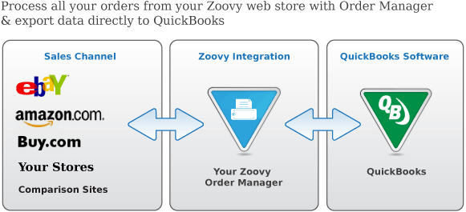

% my $menu;
% $menu = 'default';

<&| /includes/header/index.html, title => 'Growing your Business - Billing and Accounting', menu => $menu, nav=>"products|accounting" &></&>
% ## Do not touch anything above this line except for the value of the title var.


<!-- Spot 6: Billing and Accounting -->
<div id="billing" class="tabset_content" >

<h1>Data re-entry wastes time and causes mistakes</h1>
<p><strong> Integration with the popular accounting and billing software
QuickBooks</strong> <strong>makes your billing process easier, faster and more accurate.</strong></p>

<div style="margin-bottom:10px;"></div>

<p>By accessing information in your common order and billing database, avoid the costly mistakes that come from copying and pasting, or even retyping, customer orders into a separate system.</p>

<p>Zoovy Order manager allows you to process multiple orders even when offline, integrating directly with Quickbooks to streamline the processing of large amounts of orders.</p>

<p>The Zoovy Enterprise Suite of packages is also available for large businesses that wish to host their databases on their own servers and use multiple copies of Order Manager.</p>
	
</div>

% # Do not touch anything below this line.
<&| /includes/footer/index.html, menu => $menu &></&>